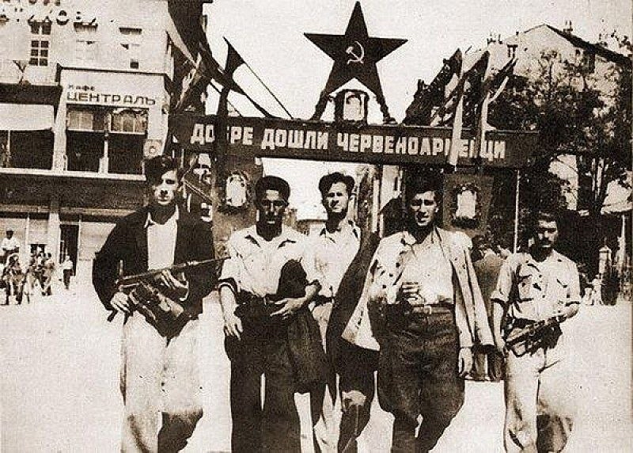
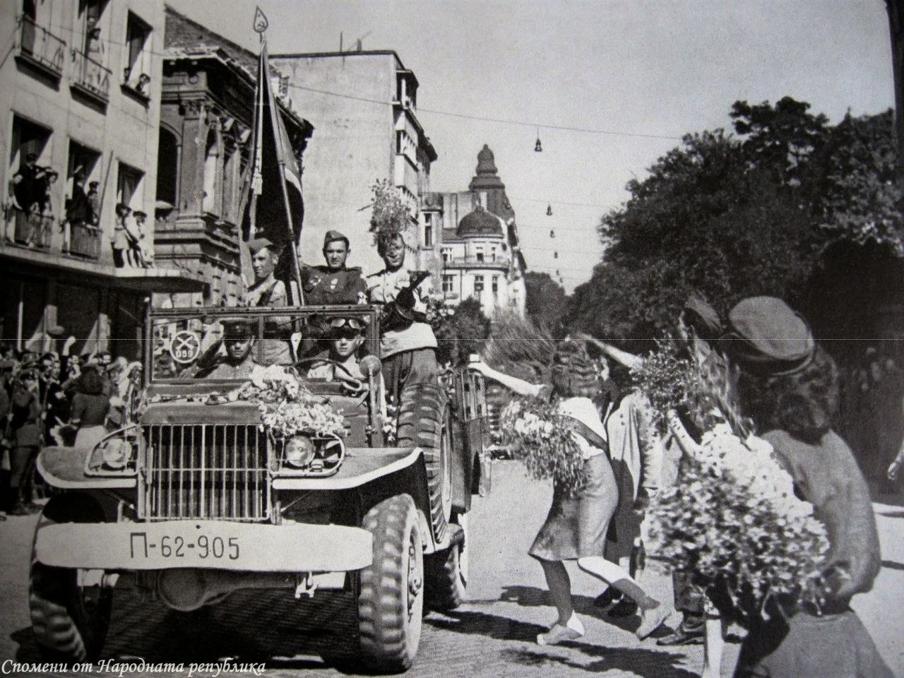
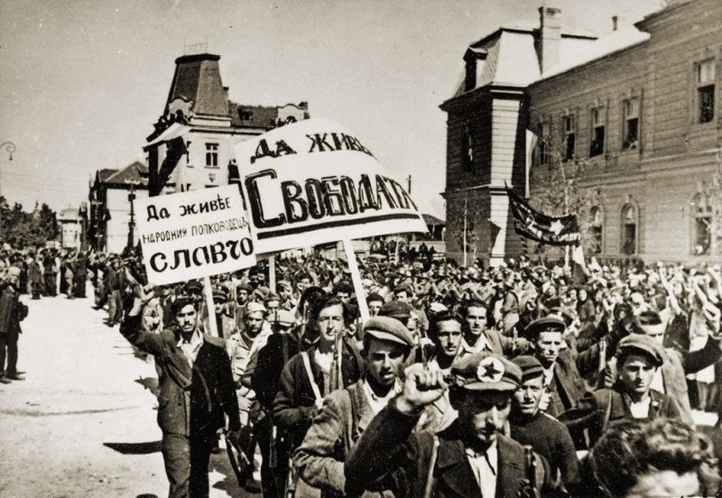
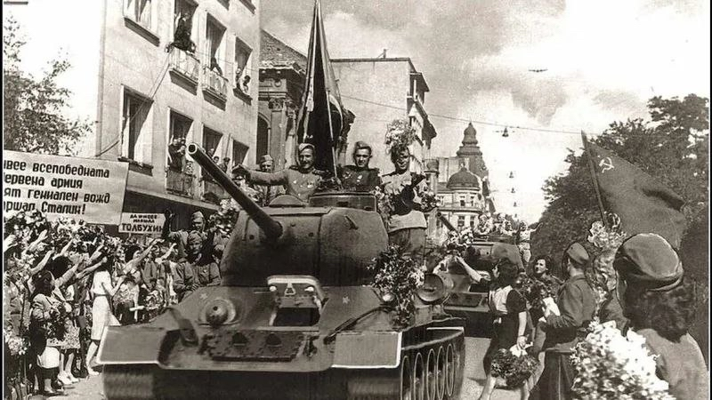

Ситуацията в България от края на 1930-те до 1941 г. The situation in Bulgaria from the late 1930s to 1941
Социалистическата революция в България на 9 септември 1944 г. е закономерен резултат от социално-икономическата и политическата криза в страната от предходните години, допълнително усложнена от намесата на страната във Втората световна война. Подобно на останалите капиталистически държави, и в България социално-икономическата система почива на класово разделение и класова експлоатация. Войнишкото въстание в края на септември 1918 г. и Септемврийското въстание през 1923 г. представляват кулминацията на засилващата се съпротива на пролетариата и селяните срещу буржоазията. И двете събития приключват с победа на капиталистическата класа и нейните представители във властта. В следващите години борбата е възобновена, като естествено следствие от нестихващия класов антагонизъм. The socialist revolution in Bulgaria on September 9, 1944, was the logical outcome of the socio-economic and political crisis the country had faced in preceding years—a situation further exacerbated by its involvement in World War II. Like other capitalist states, Bulgaria’s socio-economic system was rooted in class division and class exploitation. The Soldiers' Revolt of late September 1918 and the September Uprising of 1923 marked the culmination of the intensifying resistance by the proletariat and the peasantry against the bourgeoisie. Both events ended in victory for the capitalist class and its representatives in power. In the years that followed, the struggle resumed as a natural consequence of persistent class antagonism.
Положението на селското население и работническата класа продължава да бъде изключително тежко и през 30-те години на ХХ в. На фона на Световната икономическа криза със Закона за държавния бюджет (1931-1932) са въведени удръжки от заплатите на чиновниците. Същевременно икономическото развитие на страната продължава да обслужва едрата буржоазия и въпреки вялите опити за ограничения, монополите продължават да действат. Същевременно започва проникването на германските капитали, което по-късно ще се превърне и в политическо. На 24 юни 1932 г. правителството на Никола Мушанов подписва с Германия договор за търговия и корабоплаване, предоставящ на двете страни статута на „най-облагодетелствана нация‘‘. Показателно е, че това е и първият търговски договор, който България сключва след края на Първата световна война. Икономическото обвързване на България с Германия бързо става толкова сериозно, че започва отглеждането на индустриални култури в земеделието с цел обслужване на немското производство [1]. През 1936 г. правителството на Георги Кьосеиванов сключва договор за превъоръжаване на армията от германски военни компании на стойност 1,8 млрд. лв. Скоро са осъществени и стъпките към политически съюз с Нацистка Германия. На 12 март 1938 г. е подписан таен протокол между Третия райх и Царство България в Берлин от Карл Клодиус, Марко Рясков и Първан Драганов. Германското правителство се съгласява българската държава да поръча бойна техника, с изключение на самолети, на стойност 30 млн. марки (1 млрд. лева). Доставките се извършват възможно най-бързо и най-късно до 2 години, а изплащането започва от 1942 г. в петгодишен срок при лихва 6%. Още през лятото на 1936 г. цар Борис се среща с Хитлер, като за посещението си прекарва 2 седмици в Германия. The plight of the rural population and the working class remained extremely dire throughout the 1930s. Against the backdrop of the global economic crisis, the State Budget Act (1931–1932) introduced deductions from civil servants' salaries. At the same time, the country's economic development continued to serve the interests of the big bourgeoisie; despite half-hearted attempts to curb them, monopolies remained active. Concurrently, the infiltration of German capital began—a process that would later evolve into political influence as well. On June 24, 1932, the government of Nikola Mushanov signed a treaty on trade and navigation with Germany, granting both parties "most-favored-nation" status. Notably, this was the first trade agreement Bulgaria concluded after the end of World War I. Bulgaria's economic ties to Germany deepened so rapidly that the country began cultivating industrial crops specifically to supply German manufacturing [1]. In 1936, the government of Georgi Kyoseivanov concluded a contract worth 1.8 billion leva with German military companies for the rearmament of the army. Steps toward a political alliance with Nazi Germany soon followed. On March 12, 1938, a secret protocol was signed in Berlin between the Third Reich and the Kingdom of Bulgaria by Karl Clodius, Marko Ryaskov, and Parvan Draganov. The German government agreed to allow Bulgaria to order military equipment—excluding aircraft—valued at 30 million marks (1 billion leva). Deliveries were to be completed as quickly as possible, within a maximum of two years, while repayment was scheduled to begin in 1942 over a five-year period at an interest rate of 6%. Already in the summer of 1936, Tsar Boris met with Hitler, spending 2 weeks in Germany during his visit.
Фашизацията на България се засилва значително през първата половина на 30-те години на ХХ в. Реваншизмът и милитаризмът, в комбинация с омраза към комунистите, се разпространяват сред интелигенцията и политическите кръгове. През 1932 г. проф. Александър Цанков, напуснал по-рано Демократическия сговор, основава Народно социално движение (НСД) - организация с откровен фашистки характер и силни пронацистки настроения. Скоро към него се влива и Националлибералната партия на Христо Статев, а по-късно в движението влиза Димо Казасов и други политици и общественици. Така към 1934 г. по данни на самото движение членовете му са над 19 000, а на проведените на 8 февруари 1934 г. избори за селски общински съветници НСД печели трето място – с над 115 000 гласа. Едновременно с това Тайният военен съюз, идеологически близък на НСД, включва над 800 офицери, при всички 3000, като има свои клетки в почти всички гарнизони и подразделения[2]. През 1930 г. е създаден и Съюзът на българските младежки легиони с цел разпространяване на фашистка и националистическа пропаганда сред младежта. Идейният и политически кръг „Звено“ също защитава крайнодесни възгледи и антидемократични идеи за създаването на „нова държава“[3]. Наред с фашизацията на обществото, буржоазната управляваща клика започва поредните преследвания срещу комунистите, съчетавайки процеси по Закона за защита на държавата с извънзаконов натиск и терор от органите на властта. Само през 1931 г. са извършени 47 политически убийства на комунисти, а през 1933 г. по ЗЗД са касирани всички депутати на Българската работническа партия[4]. Преследвания има и срещу леви земеделци, но въпреки това комунистите и земеделците имат силно присъствие сред обществото. Това, в комбинация с политическата нестабилност на сговористките правителства, тласка фашистките и монархическите групировки към действие. На 19 май 1934 г. ТВС заедно с цанковисти организират преврат с армията и свалят кабинета на Никола Мушанов. По същото време, възползвайки се от политическата криза, цар Борис III започва да концентрира властта към себе си. Той дава подкрепата си на Военния съюз[5]. Назначено е правителство от цанковисти, военни и хора, приближени на царя, а Народното събрание е разпуснато и не са насрочени нови парламентарни избори; въвежда се тежка цензура в печата, а през юни партиите са забранени[6]. Достъпът на народните маси до управлението на страната е драстично ограничен. Заедно с това условията за работническата класа и селяните се влошават допълнително от въвеждането на икономии от 1 млрд лева чрез рязко съкращаване на всички разходи на държавата. Скоро е увеличено работното време в събота без добавъчно заплащане. От края на юли започва промяна в данъчната система на страната, която чрез разсрочване цели да се осигури постъплението на данъците дори с цената на закъснение и неритмичност. Засягат се преките и общинските данъци, акцизи. The process of fascisization in Bulgaria intensified significantly during the first half of the 1930s. Revanchism and militarism, coupled with hatred toward communists, spread among the intelligentsia and political circles. In 1932, Prof. Aleksandar Tsankov—who had previously left the Democratic Alliance—founded the National Social Movement (NSM), an organization with an overtly fascist character and strong pro-Nazi leanings. Hristo Statev’s National Liberal Party soon merged with it, and later, Dimo Kazasov, along with other politicians and public figures, joined the movement. By 1934, according to the movement's own data, its membership exceeded 19,000; furthermore, in the elections for rural municipal councilors held on February 8, 1934, the NSM secured third place with over 115,000 votes. Concurrently, the Secret Military League—ideologically close to the NSM—encompassed over 800 officers (out of a total of 3,000) and maintained cells in nearly all garrisons and military units[2]. The Union of Bulgarian Youth Legions was also established in 1930 with the aim of disseminating fascist and nationalist propaganda among the youth. The "Zveno" ideological and political circle likewise championed far-right views and anti-democratic ideas regarding the creation of a "new state"[3]. Alongside the fascisization of society, the ruling bourgeois clique launched a new wave of persecution against the Communists, combining trials under the Law for the Protection of the State with extra-legal pressure and state-sponsored terror. In 1931 alone, forty-seven Communists were victims of political assassinations, and in 1933, all deputies of the Bulgarian Workers' Party were unseated under the Law for the Protection of the State[4]. Left-wing Agrarians also faced persecution, yet both Communists and Agrarians maintained a strong presence in society. This situation, combined with the political instability of the "Sgovor" governments, spurred fascist and monarchist factions into action. On May 19, 1934, the Military Union, together with supporters of Tsankov, orchestrated a military coup and toppled the cabinet of Nikola Mushanov. At the same time, seizing upon the political crisis, Tsar Boris III began consolidating power in his own hands[5]. He threw his support behind the Military Union. A government composed of Tsankovists, military figures, and the Tsar's close associates was appointed; the National Assembly was dissolved with no new parliamentary elections scheduled; strict press censorship was imposed; and political parties were banned in June[6]. Public participation in the country's governance was drastically curtailed. At the same time, conditions for the working class and the peasantry deteriorated further due to the implementation of austerity measures amounting to 1 billion leva, achieved through drastic cuts in all state expenditures. Working hours on Saturdays were soon extended without additional pay. Starting in late July, changes were made to the country’s tax system; through a scheme of deferred payments, the aim was to ensure tax revenue, even at the cost of delays and irregularity. These measures affected direct taxes, municipal taxes, and excise duties.
През 1935 г. преследванията срещу комунистите се засилват, а царят укрепва властта си чрез назначаване на още свои хора за министри. От 21 април 1935 г. правителството е съставено изцяло от безпартийни личности, доверени на Борис. От 1936 г. в правителствата участват и открити фашисти като ген. Христо Луков, макар и отстранен от кабинета поради опозиционни мнения през 1938 г. За да противодействат, буржоазните партии създават опозиционна коалиция, в която влизат БЗНС „Врабча 1“, РСДП, Демократическият сговор и Националлибералната партия на Смилов – оформя се „Петорката“. На 8 ноември 1936 г. коалицията изпраща писмо до царя, в което настоява да възстанови спазването на Търновската конституция – царят го игнорира. Декември с.г. е изготвено Всенародно искане с искане да се възстанови спазването на Търновската конституция, незабавно да се проведат законодателни избори, както и за икономически реформи[7]. Подписват се стотици хиляди българи TIn 1935, the persecution of communists intensified, and the Tsar consolidated his power by appointing more of his own loyalists as ministers. From April 21, 1935, the government was composed entirely of non-partisan figures trusted by Boris. Starting in 1936, avowed fascists such as Gen. Hristo Lukov also participated in the government, although he was removed from the cabinet in 1938 due to dissenting views. In response, bourgeois parties formed an opposition coalition—known as "The Five" (Petorkata)—comprising the BZNS "Vrabcha 1," the RSDP, the Democratic Alliance, and Smilov’s National Liberal Party. On November 8, 1936, the coalition sent a letter to the Tsar demanding a return to observance of the Tarnovo Constitution; the Tsar ignored it. In December of that year, a "National Petition" was drafted, calling for the restoration of the Tarnovo Constitution, the immediate holding of legislative elections, and economic reforms[7]; hundreds of thousands of Bulgarians signed it.
През март 1938 г. са проведени парламентарни избори и Народното събрание възобновява работата си след 4 години прекъсване. За да подсигури разгрома на опозицията, режимът предприема масово спиране на печатни издания още от края на 1936 г. Забранени са публичните изяви, а през 1937 г. тези практики се разширяват като започва интерниране на политическата опозиция в лагери, арести и побоища. Сред методите за подсигуряване на режима е и намаляването на броя на депутатите на 160[8]. В изборите обаче могат да участват само безпартийни кандидати и отново законодателната власт остава в ръцете на приближени на царя пронацистки и профашистки настроени депутати[9]. От петимата депутати комунисти, двама са касирани още през лятото на 1938 г. Опитите за сваляне на режима в България не успяват. Parliamentary elections were held in March 1938, and the National Assembly resumed its work after a four-year hiatus. To ensure the defeat of the opposition, the regime had begun suppressing print publications on a massive scale as early as late 1936. Public gatherings were banned, and in 1937, these measures intensified to include the internment of political opponents in camps, as well as arrests and beatings. Another method used to secure the regime's position was reducing the number of parliamentary deputies to 160[8]. However, only non-partisan candidates were permitted to run, and legislative power once again remained in the hands of pro-Nazi and pro-fascist deputies loyal to the Tsar[9]. Of the five Communist deputies, two had their elections annulled as early as the summer of 1938. Attempts to overthrow the regime in Bulgaria failed.
В стопанската си политика властта предприема резки увеличения на данъците с цел попълване на огромния бюджет за превъоръжаване. Така размерът на косвените данъци нараства от 16% на над 43% в периода 1934-1938 г. през 1939 г. между 30 и 50% от приходите на данъкоплатците се отнемат с данъци. Военните разходи възлизат на над 2,36 млрд. лв. за 1939 г.[10]. Военизирането върви с пълна сила. TIn its economic policy, the government implemented sharp tax increases to fund the massive rearmament budget. Consequently, the share of indirect taxes rose from 16% to over 43% between 1934 and 1938; by 1939, taxes were claiming between 30% and 50% of taxpayers' income. Military expenditures exceeded 2.36 billion leva in 1939[10]. Militarization was proceeding at full speed.
На 19 април 1939 г. е издадена Наредба 19, в която се изтъква, че България не приема следвоенните граници и държи за връщането на Южна Добруджа, Западна Тракия и Западните покрайнини. Скоро след това – на 21 април е подписан и втори таен протокол между Третия райх и Царство България в Берлин, който разрешава оръжейни поръчки на стойност 45 милиона марки. С подписания на 24 юни трети таен протокол се разрешават поръчки и на отказваните доскоро различни видове самолети за сумата от 10 милиона германски марки. On April 19, 1939, Decree No. 19 was issued, asserting that Bulgaria did not accept the post-war borders and insisted on the return of Southern Dobruja, Western Thrace, and the Western Outlands. Shortly thereafter—on April 21—a second secret protocol was signed in Berlin between the Third Reich and the Kingdom of Bulgaria, authorizing arms orders worth 45 million marks. A third secret protocol, signed on June 24, authorized orders totaling 10 million German marks for various types of aircraft that had previously been refused.
На 15 септември 1939 г. правителството на Кьосеиванов обявява неутралитет на България. Това до голяма степен е продиктувано от германската стратегия да не се отваря фронт на изток и на Балканите, докато не се подсигури победа в Западна Европа[11]. On September 15, 1939, the Kyoseivanov government declared Bulgaria's neutrality. This was largely dictated by the German strategy of avoiding the opening of a front in the East and the Balkans until victory in Western Europe was secured[11].
През декември 1939 г. и януари 1940 г. са проведени нови избори за парламент, на които комунистите печелят 10 места. На 15 февруари 1940 г. е съставено правителство начело с Богдан Филов. Приети са нови закони, с които още повече се засилва превъзходството на изпълнителната власт над законодателната. Приет е и закон за мобилизацията, който предвижда големи правомощия за властта в случаи на война. Според същия закон на работниците е забранено да сменят местожителството си, както и да обявяват стачки за увеличаване на заплатите. На Министерския съвет са дадени извънредни правомощия за „опазване на народа от духовно и материално увреждане“[12]. Така по същество се увеличават репресивните мерки срещу опозицията изобщо. New parliamentary elections were held in December 1939 and January 1940, in which the Communists won 10 seats. On February 15, 1940, a government led by Bogdan Filov was formed. New laws were enacted that further strengthened the executive branch's supremacy over the legislative branch. A mobilization law was also passed, granting the authorities sweeping powers in the event of war. Under this law, workers were prohibited from changing their place of residence or calling strikes to demand wage increases. The Council of Ministers was granted extraordinary powers to "protect the people from spiritual and material harm"[12]. In essence, this led to an intensification of repressive measures against the opposition as a whole.
На 18 ноември 1940 г. цар Борис III и външният министър Попов пристигат в Германия за лична среща с Хитлер. Царят дава обещание германски войски да бъдат пуснати през България през март 1941 г. Включването на страната в Тристранния пакт е предрешено. Същевременно съветската външна политика се опитва всячески да осуети попадането на Балканите под нацистки контрол. Състои се среща между българската и съветската легации, начело с Хр. Шишманов и Киреев на 22.10.1940 г. Киреев уверява, че СССР няма намерения да се обвързват военно или политически с Германия[13]. Същият предупреждава, че положението на България ,,ставало сега по-трудно“, в случай че Италия или Германия поискат да се помогне на италианската войска в Албания[14]. Отбелязва се, че Англия иска да спечели Съветския съюз на тяхна страна, докато в същото време конфискува съветско злато и съветски параходи[15]. Генералният секретар на Съветското външно министерство Аркадий Соболев е изпратен в България на 26 ноември 1940 г. с предложение за сключване на договор за приятелство със Съветския съюз. Ще се спрем на най-ключовите точки от договора: ,,2. СССР напълно разбира българските интереси в Западна Тракия и е готов да съдейства за осъществяването им.“[16] ; ,,5. Във връзка с общите интереси на СССР и България, СССР подновява предложението си от септември 1939 г. за сключване на съюз за взаимно подпомагане, който би бил в помощ на България за осъществяване на националните ѝ стремежи не само в Западна, но също и в Източна Тракия.“[17]; ,,9. Съюзът за взаимопомощ между България и СССР не може в никакъв случай да засегне вътрешния режим, суверенитет и независимостта на България.“[18] ; ,,10. Ако България бъде заплашена от едно нападение или последва едно нападение от страна на Турция, то СССР ще подпомогне България с всички средства и ще спомогне за осъществяването на известните претенции на България към европейските части на Турция.“ [19] ; ,,11. СССР е готов да укаже под формата на един заем на България съответна помощ в пари, продоволствие, въоръжение и материали ако България се нуждае от тях. Същевременно СССР е готов да увеличи своите покупки на български стоки.“ [20] ; ,,12. Възраженията, които има СССР против присъединяването на България към известния Тристранен пакт отпадат при условие, че съюзът за взаимопомощ между България и СССР бъде сключен. Напълно е възможно и СССР да се присъедини в този случай към Тристранния пакт.“ [21]. Турският пълномощен министър е връчил телеграма от турския министър на външните работи Сарачоглу, която е предназначена за външния мин. Иван Попов. Става въпрос за кореспонденцията между Сарачоглу и г-н Фон Папен (посланик в Анкара). Там Папен декларира, че Германия губи интереса си към итало-гръцката война, тъй като няма да бъде организиран фронт на британските войски. С това той иска да увери Турция, че Германия няма териториални интереси и ,,няма да поиска нищо от Турция, което да е в противоречие с нейните съюзници“[22]. Следователно Сарачоглу иска да разбере какво е мнението на България за по-тесни дипломатически връзки с Турция. Телеграмата дава на българското правителство оправдание да отхвърли предложението на СССР, като ,,премахва опасността“ от турска намеса в българските интереси. Започва масово разгласяване на предложението сред народа, като БРП успява да мобилизира всички свои ресурси. До началото на декември 1940 г. властта е залята със стотици хиляди писма и подписки, организирани са митинг, шествия и протести в подкрепа на съветското предложение[23]. Правителството не зачита народните искания. Отговорът, който Лавришев, посланикът на Съветския съюз, получава по предложенията на Соболев е, че България отхвърля предложението на Соболев по следните съображения: 1. България не смята да осъществява националното си обединение със сила; 2. Турция не представлява непосредствена опасност за България и не иска да се създава напрежение с евентуален пакт между България и СССР; 3. Предложението не иска да попречи на разговорите между Германия и България за присъединяване към Тристранния пакт[24]. В края на ноември 1940 г. СССР уверява БГ, че съображенията по отказа са неоснователни и прави контра предложение, което задължава СССР едностранно да гарантира интересите на България. СССР предупреждава България, че въпреки тяхната миролюбива политика, присъединяването им към един от воюващите лагери, ще опетни имиджа им на неутрална държава и може да се стигне до вкарването ѝ във война[25]. On November 18, 1940, Tsar Boris III and Foreign Minister Popov arrived in Germany for a personal meeting with Hitler. The Tsar promised that German troops would be allowed to pass through Bulgaria in March 1941. The country's accession to the Tripartite Pact was a foregone conclusion. At the same time, Soviet foreign policy was making every effort to prevent the Balkans from falling under Nazi control. A meeting took place between the Bulgarian and Soviet legations—led by Hristo Shishmanov and Kireev—on October 22, 1940. Kireev gave assurances that the USSR had no intention of entering into a military or political alliance with Germany[13]. He warned that Bulgaria’s position would become "more difficult" should Italy or Germany request assistance for Italian forces in Albania[14]. It was noted that Britain sought to win the Soviet Union over to its side, even while simultaneously confiscating Soviet gold and merchant vessels[15]. Arkady Sobolev, General Secretary of the Soviet Foreign Ministry, was sent to Bulgaria on November 26, 1940, with a proposal to conclude a treaty of friendship with the Soviet Union. We shall focus on the treaty's key points: "2. The USSR fully understands Bulgaria's interests in Western Thrace and is prepared to assist in their realization"[16]; "5. In light of the shared interests of the USSR and Bulgaria, the USSR renews its proposal from September 1939 to conclude a mutual assistance pact that would aid Bulgaria in realizing its national aspirations not only in Western Thrace but also in Eastern Thrace.”[17] ; “9. The mutual assistance pact between Bulgaria and the USSR shall in no way affect Bulgaria’s internal regime, sovereignty, or independence.” [18]; “10. Should Bulgaria be threatened by an attack or actually suffer an attack from Turkey, the USSR will assist Bulgaria by all means and help realize Bulgaria’s known claims regarding the European territories of Turkey.”[19] ; “11. The USSR is prepared to provide Bulgaria with appropriate assistance—in the form of a loan—consisting of funds, foodstuffs, armaments, and materials, should Bulgaria require them. At the same time, the USSR is prepared to increase its purchases of Bulgarian goods.”[20] ; “12. The USSR’s objections to Bulgaria joining the Tripartite Pact would be waived provided that the mutual assistance pact between Bulgaria and the USSR is concluded. It is entirely possible that the USSR itself might also join the Tripartite Pact in such a scenario.” [21]. The Turkish Minister Plenipotentiary has delivered a telegram from Turkish Foreign Minister Saraçoğlu addressed to Foreign Minister Ivan Popov. The message concerns the correspondence between Saraçoğlu and Mr. von Papen (the ambassador in Ankara). In it, Papen states that Germany is losing interest in the Italo-Greek war, as no front involving British troops is to be established. By doing so, he seeks to reassure Turkey that Germany has no territorial ambitions and "will ask nothing of Turkey that would conflict with its allies."[22]. Consequently, Saraçoğlu wishes to ascertain Bulgaria's views on establishing closer diplomatic ties with Turkey. The telegram provided the Bulgarian government with a justification for rejecting the USSR's proposal, effectively "eliminating the danger" of Turkish interference with Bulgarian interests. A massive public awareness campaign was launched, with the Bulgarian Workers' Party (BRP) mobilizing all its resources. By early December 1940, the authorities were inundated with hundreds of thousands of letters and petitions, while rallies, marches, and protests were organized in support of the Soviet proposal[23]. The government disregarded the public's demands. The response conveyed to Lavrishev, the Soviet ambassador, regarding the Sobolev proposals was that Bulgaria rejected the offer based on the following grounds: 1. Bulgaria did not intend to achieve national unification through the use of force; 2. Turkey posed no immediate threat to Bulgaria, and the country wished to avoid creating tension through a potential pact with the USSR; 3. The proposal was not intended to hinder ongoing talks between Germany and Bulgaria regarding accession to the Tripartite Pact[24]. In late November 1940, the USSR assured Bulgaria that its objections were unfounded and put forward a counter-proposal under which the USSR would unilaterally guarantee Bulgaria's interests. The USSR warned Bulgaria that, despite its policy of peace, joining one of the warring blocs would tarnish its image as a neutral state and could lead to its involvement in the war[25].
Засилване на общественото недоволство и начало на въоръжената съпротива Escalation of public discontent and the beginning of armed resistance
Наред със засиленото икономическо подчинение на германския капитал, към края на 1940 г. България вече изпитва и сериозен политически натиск от Германия. Разрастването на войната и последиците ѝ върху немската икономика удрят и България – цените се покачват, а въпреки опитите за техния контрол спекулата и инфлацията се развихрят. На този фон започва струпването на германски войски по северната граница на България с направление Гърция. На 1 март започва прехвърлянето на войските, а на граничните гарнизони е наредено да не стрелят – същия ден е подписано официално присъединяването на България към Тристранния пакт. Същият ден 17-те опозиционни депутати обвиняват правителството в заблуждаване на населението и тласкане на България към включване във войната. БРП изготвя декларация с настояване за сключване на договор със СССР и за възстановяване на неутралитета[26]. Напрежението нараства. Alongside increasing economic subordination to German capital, by late 1940 Bulgaria was also facing serious political pressure from Germany. The expansion of the war and its impact on the German economy took their toll on Bulgaria as well: prices rose, and despite attempts at control, speculation and inflation spiraled out of control. Against this backdrop, German troops began massing along Bulgaria’s northern border, heading toward Greece. The troop transfer began on March 1, with border garrisons ordered not to fire; that same day, Bulgaria’s formal accession to the Tripartite Pact was signed. On that same day, 17 opposition MPs accused the government of misleading the public and pushing Bulgaria toward entering the war. The BRP (Bulgarian Workers' Party) drafted a declaration demanding the conclusion of a treaty with the USSR and the restoration of neutrality[26]. Tensions mounted.
След нападението над Съветския съюз от Нацистка Германия на 22 юни 1941 г. сред българския народ бързо се разпространява недоволство, а само в рамките на дни общественият интерес към войната нараства главоломно. По свидетелствата на политика и участник в антифашистката съпротива в България Николай Георгиев Иванов: „Вестниците се разграбват, всеки се зачита в тях и се стреми да разбере и това, което... се чете между редовете... Полицаите сноват, дебнат кой къде отива, с кого и какво говори...“[27]. Широко разпространените русофилски и просоциалистически настроения в обществото и най-вече сред земеделското население и работническата класа, предопределят и бурната ответна реакция. Последват хиляди писма до различни държавни институции, както и до самото правителство. Използваната от монархо-фашистката власт пропагандна постановка за „приятелските отношения“ между Германия и СССР пропада. Following the attack on the Soviet Union by Nazi Germany on June 22, 1941, discontent spread rapidly among the Bulgarian people, and within mere days, public interest in the war surged dramatically. According to the account of politician and anti-fascist resistance participant Nikolay Georgiev Ivanov: "Newspapers were snapped up; everyone pored over them, striving to grasp even what... was written between the lines... Police officers patrolled constantly, watching to see who was going where and with whom—and what was being said..." [27]. Widespread Russophile and pro-socialist sentiments within society—particularly among the agrarian population and the working class—precipitated a vehement reaction. Thousands of letters poured into various state institutions and the government itself. The propaganda narrative regarding "friendly relations" between Germany and the USSR, promoted by the monarcho-fascist regime, collapsed.
На 24 юни 1941 г. Политбюро на ЦК на БРП решава да се премине към въоръжена борба[28]. Ръководството на съпротивата се осъществява от Задграничното бюро на ЦК на БРП, съставено от български комунисти в емиграция, сред които Георги Димитров и Васил Коларов. Вътрешното ръководство е начело с Антон Иванов и Трайчо Костов. На първо време се предприемат саботажни действия в големите градове от местните бойни групи, а скоро започва и създаването на първите малки партизански чети. По данни на полицията през 1942 г. те са 27[29]. Още през лятото на 1941 г. започват първите удари срещу военните доставки за Вермахта. Взривени са жп линиите Варна-София и Русе-Варна. В редица предприятия се поврежда продукция, както и машини. Започва усилена агитация сред работниците, селяните и армията – създадени са групи в редица гарнизони. Още в края на юни се създава първата бойна чета начело с Никола Парапунов, последват чети в Горноджумайски и Дупнишко, а през есента вече има чети в Баташко, Видинско, Асеновградско, Старозагорско Плевенско, Варненско и др. Към ЦК на БРП е създадена Военна комисия, оглавена есента на 1941 г. от Цвятко Радойнов[30]. On June 24, 1941, the Politburo of the Central Committee of the BRP (Bulgarian Workers' Party) decided to launch an armed struggle[28]. The resistance was directed by the BRP Central Committee’s Overseas Bureau, composed of Bulgarian communists in exile—including Georgi Dimitrov and Vasil Kolarov—while the domestic leadership was headed by Anton Ivanov and Traycho Kostov. Initially, local combat groups carried out acts of sabotage in major cities, and the formation of the first small partisan detachments soon followed; police records indicate there were 27 such units in 1942[29]. As early as the summer of 1941, the first strikes against Wehrmacht military supplies were launched; the Varna–Sofia and Ruse–Varna railway lines were blown up, and machinery and products were damaged in various industrial plants. Intensive agitation began among workers, peasants, and the army, with groups established in a number of garrisons. The first combat detachment, led by Nikola Parapunov, was formed in late June, followed by units in the Gorna Dzhumaya and Dupnitsa regions; by autumn, detachments were active in the Batak, Vidin, Asenovgrad, Stara Zagora, Pleven, and Varna regions, among others. A Military Commission was established under the BRP Central Committee, headed from the autumn of 1941 by Tsvyatko Radoynov[30].
Българското правителство заседава извънредно на 22 юни и решава да се предприеме превантивен удар срещу съпротивителните народни действия, водени от комунистите. Органите на властта засилват следенето, а комунистическите депутати са поставени под домашен арест и по-късно касирани. Разбити са и немалко от бойните групи чрез внедрени в тях двойни агенти. Арестувани и изпратени в концентрационни лагери са над 200 комунисти[31]. Такива лагери са създадени в Гонда вода, Кръсто поле и на о. Анастасия[32]. Полицията действа брутално и светкавично под ръководството на Никола Гешев. През първите месеци на 1942 г. започват нови мащабни арести – издадени са десетки смъртни присъди. Мнозина от състава на ЦК са заловени и екзекутирани, сред тях са Цвятко Радойнов, Антон Иванов, както и Никола Вапцаров в ролята му на технически сътрудник на ЦК. Смазващите удари на монархо-фашистката полиция сериозно пречат на БРП да разгърне пълномащабна и координирана дейност. Въпреки това, в четите се включват и непартийни лица, както и членове на БЗНС. The Bulgarian government held an extraordinary session on June 22 and decided to launch a preemptive strike against the popular resistance activities led by the communists. Authorities intensified surveillance, while communist deputies were placed under house arrest and subsequently stripped of their parliamentary mandates. Many of the combat groups were also dismantled through the use of embedded double agents. Over 200 communists were arrested and sent to concentration camps[31]; such camps were established at Gonda Voda, Krastyo Pole, and on St. Anastasia Island[32]. The police acted with brutality and lightning speed under the command of Nikola Geshev. New large-scale arrests began in the early months of 1942, resulting in dozens of death sentences. Many members of the Central Committee were captured and executed, including Tsvyatko Radoynov, Anton Ivanov, and Nikola Vaptsarov (who served as a technical aide to the Central Committee). The crushing blows dealt by the monarcho-fascist police severely hampered the BRP’s ability to launch full-scale, coordinated operations. Nevertheless, non-party individuals and members of the Bulgarian Agrarian National Union (BZNS) also joined the partisan detachments.
Положението в страната постепенно се затяга, поради растящите разходи по издръжка на българските и немските войски. Още на 12 декември 1941 г. Министерският съвет приема постановление, според което дневната дажба хляб за възрастен човек е определена на 300 гр., а за деца – 150 гр. През януари 1942 г. е въведено ограничението за продажбата и консумацията на месо – тя е позволена само в 5 дни от седмицата. Въведен е и задължителен „картофен ден“ всеки месец[33]. Ограничения са наложени и върху консумацията на растителни масла и др. Започва продоволствена криза, консумацията значително намалява. Липсата на фураж за добитъка налага масовото му изколване, развихря се спекулата и „черната борса“[34]. Всичко това е обусловено от тежката икономическа зависимост на България от Германия, както и изпращането на продоволствия за германската армия на фронта. За периода 1941-1944 г. за Германия са изнесени 546 000 т въглища, 180 000 т тютюн, 265 000 т плодове, 450 000 т спиртни напитки, 4 416 000 броя овце, 3 350 000 броя свине, 767 000 птици, 375 000 т зърно. Икономическата тежест се стоварва върху работниците и селяните – за периода 1939-1942 г. данъците на селяните нарастват от 10 млрд. лв. на 20 млрд. лв., а работническата заплата е в състояние да покрие едва 35% от базовите нужди на семействата[35]. The situation in the country gradually tightened due to the rising costs of maintaining Bulgarian and German troops. As early as December 12, 1941, the Council of Ministers adopted a decree setting the daily bread ration at 300 grams for adults and 150 grams for children. In January 1942, restrictions were introduced on the sale and consumption of meat, limiting it to five days a week. A mandatory "potato day" was also instituted each month[33]. Restrictions were likewise imposed on the consumption of vegetable oils and other goods. A food crisis ensued, and consumption dropped significantly. A lack of livestock fodder necessitated mass slaughtering of animals, while profiteering and the black market flourished[34]. All of this was driven by Bulgaria's heavy economic dependence on Germany, as well as the shipment of supplies to the German army at the front. Between 1941 and 1944, exports to Germany included 546,000 tonnes of coal, 180,000 tonnes of tobacco, 265,000 tonnes of fruit, 450,000 tonnes of alcoholic beverages, 4,416,000 sheep, 3,350,000 pigs, 767,000 poultry, and 375,000 tonnes of grain. The economic burden falls upon the workers and peasants: between 1939 and 1942, taxes on peasants rose from 10 billion to 20 billion leva, while workers' wages could cover only 35% of their families' basic needs[35].
Същевременно, режимът приема и нови закони, ограничаващи дейността на опозицията. Чрез тях държавата засилва контрола си върху обществения живот и формите на сдружавания на гражданите. Държавата поема пълния контрол върху издаваните учебници, премахва се практиката на автономия на университета и читалищата. Във Военнонаказателния закон се добавят 11 алинеи, налагащи смъртно наказание. Направени са и 21 добавки в ЗЗД, предвиждащи смъртно наказание[36]. At the same time, the regime enacted new laws restricting opposition activities. Through these measures, the state tightened its control over public life and forms of civic association. The state assumed full control over the publication of textbooks, and the practice of university and *chitalishte* (community center) autonomy was abolished. Eleven clauses mandating the death penalty were added to the Military Penal Code, and twenty-one amendments prescribing capital punishment were made to the Law on the Protection of the State[36].
Нарастващата неприязън към властта тласка населението към неподчинение, но Задграничното бюро на ЦК предприема тактика за привличане на широки народни маси. На 17 юли 1942 г. по радиостанция ,,Хр. Ботев“ от Москва е прочетена програма на Отечествения фронт за спасение на България. По нареждане на Г. Димитров и В. Коларов от Москва, ЦК на БРП веднага започва дейност във връзка с програмата на ОФ. Отговорници по нея са Цола Драгойчева и Кирил Драмалиев. ЦК на БРП бързо влиза във връзка с всички опозиционни партии и групи. Готовност за включване в ОФ проявяват само „Звено” и БЗНС „Пладне”, представени от К. Георгиев и Н. Петков[37]. Разпространява се и саботажната практика – само за 1942 г. акциите, по регистри на полицията, са 234. Подпалвани са складове с провизии за немската армия, повреждани са жп линии за доставки, както и заводи и ремонтни центрове[38]. Но все пак съпротивата остава сравнително ограничена. Growing hostility toward the authorities was driving the population toward disobedience, yet the Central Committee’s Foreign Bureau adopted a strategy aimed at rallying the broad masses. On July 17, 1942, the Fatherland Front’s program for the salvation of Bulgaria was broadcast from Moscow via the "Hristo Botev" radio station. Acting on instructions from G. Dimitrov and V. Kolarov in Moscow, the Central Committee of the BRP immediately initiated activities related to the Fatherland Front program; Tsola Dragoycheva and Kiril Dramaliev were placed in charge of this effort. The BRP Central Committee quickly established contact with all opposition parties and groups. However, only "Zveno" and the BZNS "Pladne"—represented by K. Georgiev and N. Petkov[37], respectively—showed a willingness to join the Fatherland Front. Acts of sabotage also became widespread; police records indicate there were 234 such incidents in 1942 alone. Warehouses containing supplies for the German army were set ablaze, and railway lines used for logistics, as well as factories and repair facilities, were damaged[38]. Nevertheless, the resistance remained relatively limited in scope.
Свидетелство за проникването на нацисткото влияние сред българския държавен елит е приетият през 1940 г. Закон за защита на нацията (ЗЗН), почиващ на расистките принципи на евгениката. Първият дял е със „заклинателен характер” и е озаглавен „За тайните и международните организации”. В него се развива идеята за световния ционистки заговор. Ограничителните разпоредби забраняват на лица от еврейски произход да бъдат приемани за български поданици, да бъдат избираеми, да заемат държавни, общински и други служби. Освен това се въвежда и разорителен данък върху еврейското имущество. Еврейското население е принудено да нови „жълти звезди“, принуждавано е да извършва тежък физически труд, а физическото насилие също не е рядкост. Въпреки това българското население, включително държавни служители и висши чиновници полагат големи усилия за обезсилване на практическото приложение на ЗЗН[39]. Независимо от това, обръчът около българските евреи се затяга. На конференцията във Ванзее (20 януари 1942 г.) националсоциалистите приемат план за физическо унищожаване на евреите в намиращите се под германски контрол държави[40]. The Law for the Protection of the Nation (LPN), adopted in 1940 and based on the racist principles of eugenics, stands as evidence of the penetration of Nazi influence among the Bulgarian state elite. Its first section, which is of an alarmist nature, is titled "On Secret and International Organizations" and expounds the theory of a global Zionist conspiracy. Restrictive provisions barred individuals of Jewish descent from acquiring Bulgarian citizenship, running for elected office, or holding positions in state, municipal, or other public services. Furthermore, a ruinous tax was imposed on Jewish property. The Jewish population was compelled to wear "yellow stars" and perform hard physical labor, while physical violence was commonplace. Nevertheless, the Bulgarian public—including civil servants and high-ranking officials—made significant efforts to undermine the practical enforcement of the LPN[39]. Despite this, the net continued to tighten around Bulgaria's Jews. At the Wannsee Conference (January 20, 1942), the National Socialists adopted a plan for the physical extermination of Jews in countries under German control[40].
През август 1942 г. в България е създадено Комисарство по еврейските въпроси с комисар Александър Белев, а през февруари 1943 г. е подписана спогодбата „Белев-Данекер”, според която 20 хил евреи от „новите” земи трябва да бъдат депортирани. Понеже там няма повече от 14 хил, Белев е готов да включи 6 до 8 хил български евреи[41]. Царят, опитвайки се да избегне задълбочаване на общественото недоволство, забранява тяхната депортация. На 17 март 1943 г. 43 депутати начело с подпредседателя на НС Д. Пешев изпращат остър писмен протест до премиера по повод антиеврейската политика на правителството. Министър-председателят Богдан Филов е вбесен и записва в дневника си: „Сега виждам действително какво голямо влияние имат евреите и колко са вредни.“[42] In August 1942, the Commissariat for Jewish Affairs was established in Bulgaria under Commissioner Alexander Belev, and in February 1943, the Belev-Danneker Agreement was signed, stipulating the deportation of 20,000 Jews from the "new" territories. Since there were no more than 14,000 Jews in those areas, Belev was prepared to include 6,000 to 8,000 Bulgarian Jews[41]. Seeking to avoid escalating public discontent, the Tsar forbade their deportation. On March 17, 1943, 43 Members of Parliament, led by Deputy Speaker of the National Assembly D. Peshev, sent a strongly worded written protest to the Prime Minister regarding the government's anti-Jewish policy. Prime Minister Bogdan Filov was furious and noted in his diary: "Now I truly see what great influence the Jews have and how harmful they are."[42]
В началото на 1943 г. продоволствената криза се задълбочава и това настройва все по-големи части от обществото срещу властта. Едновременно с постепенното обръщане на хода на войната крайнодесните фашистки групировки започват все по-усилена пропаганда. НСД на Ал. Цанков, както и последователите на ген. Луков и Пантев още от 1941 г. нападат правителството, че не е осигурило полагащото се на България място до Германия във войната срещу болшевиките[43]. В края на лятото на 1942 г. ген. Луков и ген. Пантев замислят посещение в Германия за съгласуване на германска подкрепа при евентуален преврат и завземане на властта от легионерите и ратниците. Царят изрично забранява двамата да напускат страната[44]. През февруари 1943 г. ЦК на БРП излиза с Директива за въоръжено въстание. През пролетта партизанските части са обединени под името Народноосвободителна въстаническа армия (НОВА) със свой главен щаб. Страната е разделена на 12 въстанически оперативни зони (ВОЗ). Правителството през април 1943 г. издава наредба „Относно борбата за изтребление на разбойническите банди” – създадена е жандармерията със специалната задача да унищожава партизани и ятаци. Съпротивата се засилва, засвидетелствано в германските данни, според които през 1943 г. са проведени над 1000 саботажни акции[45]. Създадени са нови партизански чети и отряди в Горноджумайско, Асеновградско, Врачанско, Преславско, Шуменско и др. Броят на партизанските чети от началото на 1943 г. до лятото нараства от 25 на 47 с над 650 партизани[46]. In early 1943, the food supply crisis deepened, turning increasingly large segments of society against the authorities. As the tide of the war began to turn, far-right fascist groups intensified their propaganda efforts. Since 1941, Alexander Tsankov’s National Social Movement (NSM), along with the followers of Generals Lukov and Pantev, had been attacking the government for failing to secure the place due to Bulgaria alongside Germany in the war against the Bolsheviks[43]. In late summer 1942, Generals Lukov and Pantev planned a visit to Germany to coordinate German support for a potential coup d'état and a seizure of power by the Legionnaires and Ratniks; however, the Tsar explicitly forbade them from leaving the country[44]. In February 1943, the Central Committee of the Bulgarian Workers' Party (BRP) issued a directive calling for an armed uprising. That spring, partisan units were consolidated under the name People's Liberation Insurgent Army (NOVA), complete with its own general staff. The country was divided into 12 insurgent operational zones. In April 1943, the government issued a decree "On the Struggle to Exterminate Bandit Gangs," establishing a gendarmerie with the specific mission of destroying partisans and their supporters. Resistance intensified, as evidenced by German data showing that over 1,000 acts of sabotage were carried out in 1943[45]. New partisan bands and detachments were formed in the regions of Gorna Dzhumaya, Asenovgrad, Vratsa, Preslav, and Shumen, among others. Between the beginning of 1943 and the summer, the number of partisan bands rose from 25 to 47, comprising more than 650 partisans[46].
Същевременно от края на 1943 г. започват опустошителни бомбардировки на американската и британската авиация над София и редица други градове. Бързо се срива и пропагандната постановка за „символичната война“ обявена на САЩ и Великобритания през декември 1941 г. В отговор на засилващата се съпротива властта изпраща 20-хилядна армия и полиция в Средногорието за борба срещу партизаните през април 1943 г. създадени са и „контрачети“, а през октомври с.г. с постановление на Министерския съвет се създават ловни дружини към всяка дивизионна област (над 20)[47]. Монархо-фашисткият режим обаче понася сериозно дестабилизиране след смъртта на цар Борис III на 28 август 1943 г. Настъпва разединение и правителството на Филов пада. Съставен е нов кабинет начело с Добри Божилов. В нарушение на конституцията е избран Регентски съвет от Обикновеното народно събрание вместо да се свика Велико такова, а освен това сред регентите е и братът на Борис Кирил, отново в нарушение на конституцията. Външнополитическият курс на страната остава неизменен, а мерките срещу съпротивата се втвърдяват. На този фон още от средата на септември 1943 г. ЦК разгласява преминаването към масови надигания на народа и армията за сваляне на режима[48]. Властта предприема масови акции на жандармерията и армията. Арестите и убийствата продължават с пълна сила. В отговор „Черните ангели” на Славчо Радомирски успяват да хвърлят в паника столицата чрез успешните убийства на видни фашисти. Възмездието на комунистите застига на 12 февруари 1943 ген. Христо Луков, а по-късно и редовния правителствен депутат Сотир Янев. През май е покосен и жестокият комунистически гонител ген. Атанас Пантев[49]. At the same time, starting in late 1943, American and British air forces launched devastating bombing raids on Sofia and numerous other cities. The propaganda narrative regarding the "symbolic war" declared against the USA and Great Britain in December 1941 rapidly collapsed. In response to the intensifying resistance, the authorities deployed a 20,000-strong force of army and police troops to the Sredna Gora region in April 1943 to combat the partisans; "counter-detachments" were formed, and in October of that year, a Council of Ministers decree established "hunting squads" attached to each divisional district (of which there were over twenty)[47]. However, the monarcho-fascist regime suffered serious destabilization following the death of Tsar Boris III on August 28, 1943. Divisions emerged, and Filov's government fell; a new cabinet led by Dobri Bozhilov was formed. In violation of the constitution, a Council of Regents was elected by the Ordinary National Assembly rather than the Grand National Assembly; furthermore, Boris's brother Kiril was included among the regents—another constitutional violation. The country's foreign policy course remained unchanged, while measures against the resistance grew harsher. Against this backdrop, as early as mid-September 1943, the Central Committee announced a shift toward mass uprisings by the people and the army to overthrow the regime[48]. The authorities responded with large-scale operations involving the gendarmerie and the army. Arrests and killings continue unabated. In response, Slavcho Radomirski’s "Black Angels" manage to throw the capital into a panic by successfully assassinating prominent fascists. Communist retribution catches up with General Hristo Lukov on February 12, 1943, and later with the pro-government MP Sotir Yanev. In May, the ruthless persecutor of communists, General Atanas Pantev, is also struck down[49].
Революционната ситуация от средата на 1943 до септември 1944 г. The revolutionary situation from mid-1943 to September 1944.
Междувременно на 10 август 1943 г. се образува център на ОФ, който по-късно е наречен Национален комитет на ОФ. В него БРП е представена с К. Драмалиев, ,,Пладне“ – с Никола Петков, БРСДП – с Гр. Чешмеджиев, ,,Звено“ – с К. Георгиев и Димо Казасов – независим. ОФ начело с комунистите се оформя като единствената действаща опозиция на режима, популярността му расте, а доверието в монархо-фашистката власт спада. Недоволството е допълнително засилено от все по-тежката икономическа и продоволствена криза, както и от растящата безработица – в много отрасли на промишлеността производството е намалено до едва 42-45% от довоенното, а в текстилната промишленост то е намалено до 70%[50]. Десетки хиляди вече участват в съпротивата – като партизани, ятаци, куриери и т.н. Саботажните и партизанските акции се увеличават многократно като по данни на полицията за цялата 1943 г. те са 1600, а от началото на 1944 г. те стават средно по 500 на месец[51]. Значително се увеличават и въоръжените нападения, както и сраженията с жандармерията, полицията и армията. Опасността за властта става съвсем реална. На 25 януари 1944 г. Народното събрание приема закон за създаването на Държавна жандармерия[52]. През лятото на 1944 г. е предприета огромна акция на армията, жандармерията и полицията – стотици ятаци и партизани са избити. Сред тях десетки деца. Министерството на вътрешните работи обявява награда 50 000 до 200 000 лв. за партизанска глава. За награди правителството раздава над 65 150 000 лв. на 3624 души[53]. В периода януари 1942 г. – септември 1944 г. са арестувани над 65 000 души, за 12 000 от тях се иска смъртно наказание, над 1500 души са осъдени на смърт от военните съдилища, още 1133 на доживотен затвор, а над 7300 – на затвор с различен срок. Армията и полицията наброяват над 300 000 души[54]. Meanwhile, on August 10, 1943, a center for the Fatherland Front (OF) was formed, later designated as the National Committee of the Fatherland Front. It included representatives from the BRP (K. Dramaliev), "Pladne" (Nikola Petkov), the BRSDP (Gr. Cheshmedzhiev), and "Zveno" (K. Georgiev), alongside the independent Dimo Kazasov. Led by the Communists, the Fatherland Front emerged as the only active opposition to the regime; its popularity grew while confidence in the monarcho-fascist government declined. Discontent was further exacerbated by an increasingly severe economic and food supply crisis, as well as rising unemployment—industrial production in many sectors had dropped to just 42–45% of pre-war levels, while in the textile industry, it had fallen to 70%[50]. Tens of thousands were already participating in the resistance—as partisans, underground supporters, couriers, and so forth. Acts of sabotage and partisan operations multiplied; police data indicate there were 1,600 such incidents throughout 1943, whereas by early 1944, the figure had reached an average of 500 per month[51]. Armed attacks and clashes with the gendarmerie, police, and army also increased significantly. The threat to the regime became very real. On January 25, 1944, the National Assembly passed a law establishing the State Gendarmerie[52]. In the summer of 1944, a massive operation was launched by the army, the gendarmerie, and the police, resulting in the killing of hundreds of partisan supporters and partisans—including dozens of children. The Ministry of the Interior offered a reward of 50,000 to 200,000 leva for the head of a partisan. The government paid out over 65,150,000 leva in rewards to 3,624 individuals[53]. Between January 1942 and September 1944, more than 65,000 people were arrested; the death penalty was sought for 12,000 of them, while military courts sentenced over 1,500 to death, another 1,133 to life imprisonment, and more than 7,300 to prison terms of varying lengths. The combined strength of the army and police force exceeded 300,000 personnel[54].
През юни 1944 г. след отварянето на втория фронт в Нормандия, българското правителство вече усеща предстоящата загуба на Германия. В края на юли Стойчо Мошанов е изпратен за преговори с британците и американците в Кайро, но до решителни стъпки не се стига. Властта иска да продължи да получава германска подкрепа, но да не поема повече ангажименти към Германия. Положението на режима става все по-нестабилно, а антифашистката съпротива в страната все по-решителна и масова. До лятото броят на преминалите на страната на съпротивата войници от царската армия надхвърля 700, по това време вече над 900 селища са овладени от партизаните. Началникът на Държавна сигурност изтъква с тревога, че в някои райони партизанските акции стават „особено застрашителни“[55]. По сведения на държавните органи във Врачанско населението на цели села вече открито е против властта, а в Пловдивско от 97 села 42 са „комунизирани“[56]. Фашизираната буржоазна власт усеща надвисналата опасност и се опитва отчаяно да се справи с общественото недоволство, докато продължава репресивните си мерки. In June 1944, following the opening of the Second Front in Normandy, the Bulgarian government sensed Germany's impending defeat. In late July, Stoycho Moshanov was sent to Cairo to negotiate with the British and Americans, yet no decisive steps were taken. The authorities sought to maintain German support while avoiding any further commitments to Germany. The regime’s position grew increasingly unstable, while the anti-fascist resistance within the country became ever more determined and widespread. By the summer, the number of soldiers from the Royal Army who had defected to the resistance exceeded 700, and partisans had already seized control of more than 900 settlements. The head of State Security noted with alarm that partisan actions in certain regions were becoming "particularly threatening"[55]. According to state authorities, the populations of entire villages in the Vratsa region were openly opposing the government, while in the Plovdiv region, 42 out of 97 villages had become "communized"[56]. The fascist-leaning bourgeois government sensed the looming danger and made desperate attempts to quell public discontent, all while persisting with its repressive measures.
На 23 август 1944 г. в Румъния успешно е свалена фашистката диктатура, а Червената армия скоро стига до северната българска граница. Три дни по-късно – на 26 август ЦК издава Окръжно №4, в което се призовава към надигане народните маси, комунистите и ОФ и незабавно скъсване на съюза с Германия и изгонването на войските ѝ от България[57]. Започва разработване на план за реализиране на общонародно въстание. На 1 септември 1944 г. Главният щаб на НОВА нарежда на Радомирския, Пернишкия, Дупнишкия, Трънския, Кюстендилския и други отряди да започнат въоръжаване на населението за завземане на властта[58]. Под тежкия натиск правителството пада и е съставено ново начело с Константин Муравиев на 2 септември 1944 г. То започва работа на 4 септември и се опитва да съхрани остатъците от режима и да предотврати задаващата се радикална обществено-икономическа промяна. Спряно е изпълнението на смъртните присъди, раздадени са и амнистии. Въпреки това сблъсъците между наказателните структури и партизаните запазват жестокостта си. На 5 септември 1944 г. Съветският съюз обявява война на България, след като е отправил няколко последователни ноти до правителствата още от лятото. На същия ден по нареждане на Георги Димитров започва подготовка за осъществяване на всенародно въстание[59]. Още между 5 и 7 септември по места започват надигания и в някои населени места е отвоювана власт на Отечествения фронт. На 5 септември Първа средногорска бригада завзема село Розовец, на 7 септември Отечественият фронт установява власт в село Брезово и Александрово, Пловдивско. На 6, 7 и 8 септември се организирани мащабни демонстрации във Варна, София, Пловдив, Плевен, Силистра, Перник и др. с искане властта да се предаде на ОФ[60]. Паралелно на тези събития тече и евакуацията на над 2000 фашисти и членове на Гестапо с помощта на правителството на Муравиев[61]. На 8 септември 1944 г. България официално обявява война на Германия, едва след като съветските войски преминават северната граница. Условията назряват за провеждане на успешен щурм на властта. Вечерта на 8 срещу 9 септември ЦК на БРП нарежда преминаването към действие. Редица градове и села са овладени от партизаните, а в столицата навлизат няколко отряда заедно с части от армията. Правителството е арестувано. След овладяването на сградите членове на Политбюро на БРП и Кимон Георгиев и Дамян Велчев пристигат в София. On August 23, 1944, the fascist dictatorship in Romania was successfully overthrown, and the Red Army soon reached Bulgaria's northern border. Three days later—on August 26—the Central Committee issued Circular No. 4, calling upon the masses, the Communists, and the Fatherland Front to rise up, immediately sever the alliance with Germany, and expel its troops from Bulgaria[57]. Work began on a plan to launch a nationwide uprising. On September 1, 1944, the General Staff of the National Liberation Insurgent Army (NOVA) ordered the Radomir, Pernik, Dupnitsa, Trun, Kyustendil, and other detachments to begin arming the population in preparation for seizing power[58]. Under heavy pressure, the government fell, and a new one led by Konstantin Muraviev was formed on September 2, 1944. It began its work on September 4, attempting to preserve the remnants of the regime and avert the looming radical socio-economic transformation. Executions were halted, and amnesties were granted. Nevertheless, clashes between punitive forces and the partisans remained brutal. On September 5, 1944, the Soviet Union declared war on Bulgaria, following a series of diplomatic notes sent to the government throughout the summer. On that same day, acting on orders from Georgi Dimitrov, preparations began for a nationwide uprising[59]. As early as September 5–7, local uprisings began, and the Fatherland Front secured power in several settlements. On September 5, the First Sredna Gora Brigade captured the village of Rozovets; on September 7, the Fatherland Front established control in the villages of Brezovo and Aleksandrovo in the Plovdiv region. Large-scale demonstrations demanding the transfer of power to the Fatherland Front were organized on September 6, 7, and 8 in Varna, Sofia, Plovdiv, Pleven, Silistra, Pernik, and elsewhere[60]. Concurrently, the evacuation of over 2,000 fascists and Gestapo members was underway with the assistance of the Muraviev government[61]. On September 8, 1944, Bulgaria officially declared war on Germany—but only after Soviet troops had crossed the northern border. Conditions were ripe for a successful seizure of power. During the night of September 8–9, the Central Committee of the Bulgarian Workers' Party (BRP) ordered the commencement of action. Partisans took control of numerous towns and villages, while several detachments, accompanied by army units, entered the capital. The government was arrested. Following the seizure of key buildings, members of the BRP Politburo, along with Kimon Georgiev and Damyan Velchev, arrived in Sofia.
На 9 септември 1944 г. с Указ № 4 и 5 е съставено правителство на ОФ. За министър-председател е определен Кимон Георгиев (от Звено), министър на външните работи става Петко Стайнов ( от ,,Звено“), военен министър е ген. Дамян Велчев (,,Звено“), министър на вътрешните работи е Антон Югов (БРП(к)), министър на правосъдието е Минчо Нейчев (БРП(к)), няколко министерства са дадени на БЗНС ,,Пладне“ и БРСДП. Създадено е Министерство на народното здраве – Рачо Ангелов (БРП(к)), Министерство на социалната политика, Министерство на пропагандата (от 10-те – на информацията и изкуствата), поето от Димо Казасов (тогава безпартиен). Програмата на правителството е обявена на 17-и – възстановяване на Търновската конституция, премахване на авторитарната идеология, масовизиране на образованието, въвеждане на 40-часова работна седмица, приятелски отношения със западните демокрации, ограничаване на размера на поземлената собственост, решаване на Македонския въпрос въз основа на принципа за самоопределение, Народен съд за виновниците за „националната катастрофа“ и издевателствата върху борците за народни свободи и над мирното население. На 10 септември правителството на ОФ уверява ген. Толбухин (началник на Трети украински фронт), че на Червената армия ще бъде оказана подкрепа за прехвърлянето на съветските войски от района на Шумен към Лом и Видин. On September 9, 1944, a Fatherland Front government was formed via Decrees No. 4 and 5. Kimon Georgiev (of the "Zveno" group) was appointed Prime Minister; Petko Stainov ("Zveno") became Minister of Foreign Affairs; Gen. Damyan Velchev ("Zveno") was named Minister of War; Anton Yugov (BRP(k)) became Minister of the Interior; and Mincho Neychev (BRP(k)) was appointed Minister of Justice. Several ministries were allocated to the BZNS "Pladne" and the BRSDP. New ministries were established, including the Ministry of Public Health (headed by Racho Angelov, BRP(k)) and the Ministry of Social Policy, as well as the Ministry of Propaganda (later renamed the Ministry of Information and Arts), which was taken over by Dimo Kazasov (then unaffiliated with any party). The government's program was announced on the 17th, outlining the following: restoration of the Tarnovo Constitution; abolition of authoritarian ideology; expansion of access to education; introduction of a 40-hour workweek; friendly relations with Western democracies; limits on land ownership; resolution of the Macedonian Question based on the principle of self-determination; and the establishment of a People's Court to try those responsible for the "national catastrophe" and for atrocities committed against fighters for popular freedoms and the civilian population. On September 10, the Fatherland Front government assured Gen. Tolbukhin (Commander of the Third Ukrainian Front) that the Red Army would be provided with support for the transfer of Soviet troops from the Shumen area to Lom and Vidin.
15 септември 1944 г. – във Варна е подписан българо-съветски протокол, с който правителството дава на Червената армия 1 500 000 лв. за издръжка и допълнителни суми. September 15, 1944 – A Bulgarian-Soviet protocol was signed in Varna, under which the government provided the Red Army with 1,500,000 leva for maintenance, as well as additional sums.
Източници Sources
- [40] Бийвър, Антъни. Втората световна война. Том 1. Превод от английски Мария Кондакова. София: Изток-Запад, 2021. Beevor, Antony. The Second World War. Volume 1. Translated from English by Maria Kondakova. Sofia: Iztok-Zapad, 2021.
- [27][32][33] [35][38][44] [46][47][50] [52][54][55] [56][58][60] [61] Венков, Йордан. Революционната ситуация в България през Втората световна война: Философско-социологически аспекти. София: Партиздат, 1977. Venkov, Yordan. The Revolutionary Situation in Bulgaria During the Second World War: Philosophical and Sociological Aspects. Sofia: Partizdat, 1977.
- [3][6][9] [26][30][37] [45][48][51] [57] Димитров, Илия, ред. Кратка история на България. София: Наука и изкуство, 1983. Dimitrov, Iliya, ed. A Brief History of Bulgaria. Sofia: Nauka i Izkustvo, 1983.
- [11] Иванова, Диана Велева. Документи и материали по съвременна история: 1918–1945. Благоевград: Университетско издателство „Неофит Рилски“, 2011. Ivanova, Diana Veleva. Documents and Materials on Modern History: 1918–1945. Blagoevgrad: Neofit Rilski University Press, 2011.
- [1][2][4] [5][7][8] [10][12][23] [28][29][31] [34][36][39] [41][42][43] [49][53][59] Стателова, Елена, и Стойчо Грънчаров. История на България в три тома. Том III: История на Нова България 1878–1944. София: Анубис, 1999. Statelova, Elena, and Stoycho Grancharov. History of Bulgaria in Three Volumes. Volume III: History of Modern Bulgaria, 1878–1944. Sofia: Anubis, 1999.
- [13][14][15] [16][17][18] [19][20][21] [22][24][25] Билярски, Цочо, и Иванка Гезенко, съст. Дипломатически документи по участието на България във Втората световна война: Дневници на Министерството на външните работи в правителствата на Георги Кьосеиванов, проф. Богдан Филов, Добри Божилов, Иван Багрянов, Константин Муравиев (1939–1944 г.). София: Синева, 2006. Biyarski, Tsocho, and Ivanka Gezenko, comps. Diplomatic Documents on Bulgaria’s Participation in World War II: Diaries of the Ministry of Foreign Affairs during the Governments of Georgi Kyoseivanov, Prof. Bogdan Filov, Dobri Bozhilov, Ivan Bagryanov, and Konstantin Muraviev (1939–1944). Sofia: Sineva, 2006.